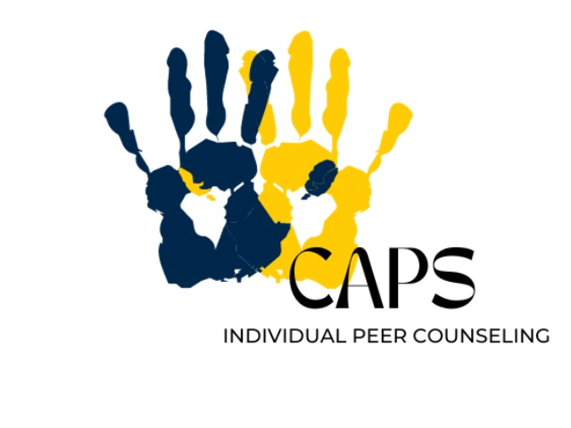

About
University Health & Counseling (UHC) supports the health and well-being of the campus community. We are inspired to help students realize their potential, cope with the stresses of life, work productively, and connect meaningfully with others. UHC is made up of Counseling and Psychological Services (CAPS), which offers counseling services, and University Health Service (UHS), which offers medical services. This website is about CAPS. For information about UHS, please visit the UHS website.
What is CAPS?
CAPS is committed to creating an environment based on the values of multicultural, multi-disciplinary and multi-theoretical practices that allow our diverse student body to access care, receive high quality services and take positive pathways to mental health. We offer both in-person and virtual services.
Our Front Desk (Michigan Union 4th Floor) is open and ready to help support you -- staff members are available throughout the day to assist you with your needs to answer questions, and get you to the right place. We can be reached by phone at: (734) 764-8312.
CAPS has a limited number of private spaces available for students to connect with their counselor via telecounseling. Please contact the front desk for more information on those private spaces.
Other Services Offered
-
Let's Talk
Is a free program that supports students starting their mental health journeys. It provides casual meetings with counselors during specific drop-in times for initial support and advice.
Trained mental health counselors are now available for drop-in conversations at different times and locations across campus, including at Trotter, the Spectrum Center, South Quad, the International Center, and Bursley.
This informal, confidential “office hours” style can be a great fit for students unsure about formal counseling; for those with a specific, time-limited concern they’d like to talk through; or those seeking information on campus resources. Please note: this is not meant for crisis or emergency support.
-
Individual Peer Counseling
Individual Peer Counseling (IPC) is designed to offer a new way to meet the needs of students across the University of Michigan. We are here to support student mental health and offer students a place to vent.
Peer counselors are trained in active listening by professional staff here at CAPS. The IPC program connects students with someone of a similar age, interest and background who can serve as a resource or simply someone to “rant” to.
While Peer Counselors will keep all information private, IPC is not a substitute for confidential therapy provided by a licensed mental health CAPS staff member.
-
UWill Teletherapy Services
Uwill provides students with access to a therapist of their choice via the mode of their choice - video, phone, chat or messaging. Teletherapy services are available during the day, as well as evenings, weekends, and holidays. Uwill has licensed mental health professionals available in all 50 states and providers in many countries of the world.
This service has been successfully used by other counseling centers, including in the Big 10.
Uwill is an addition to CAPS services that provides students with video, phone, chat, and message sessions with licensed mental health professionals at no cost. This additional counseling option offers students greater flexibility and allows CAPS to expand its service capacity.
Contact Information
To schedule an appointment or access services, visit the CAPS Website or call 734-764-8312.